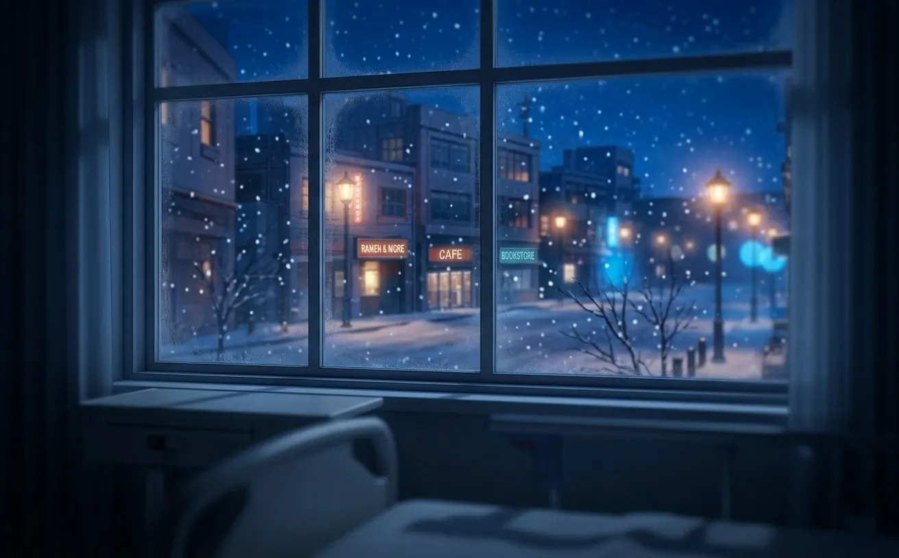
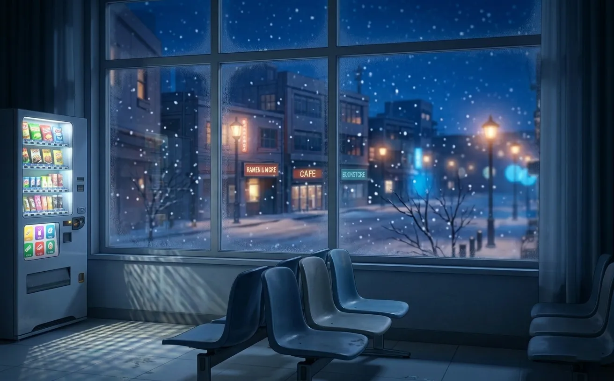
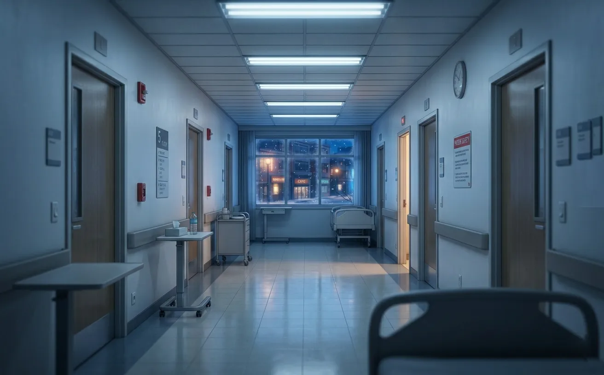
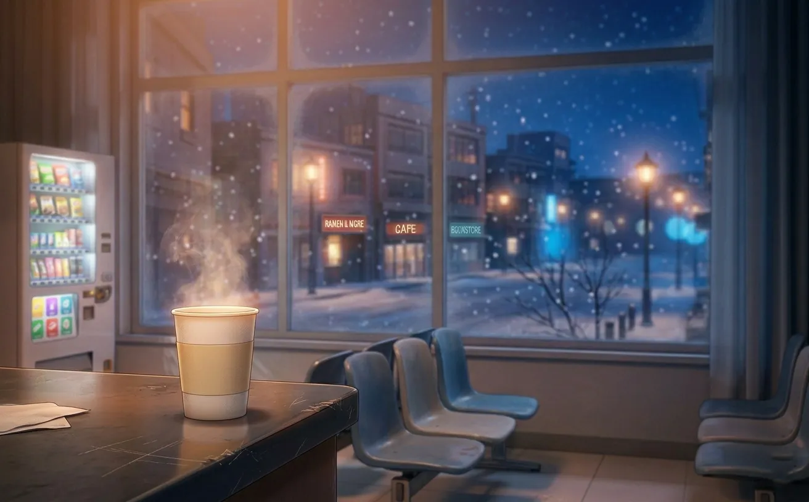
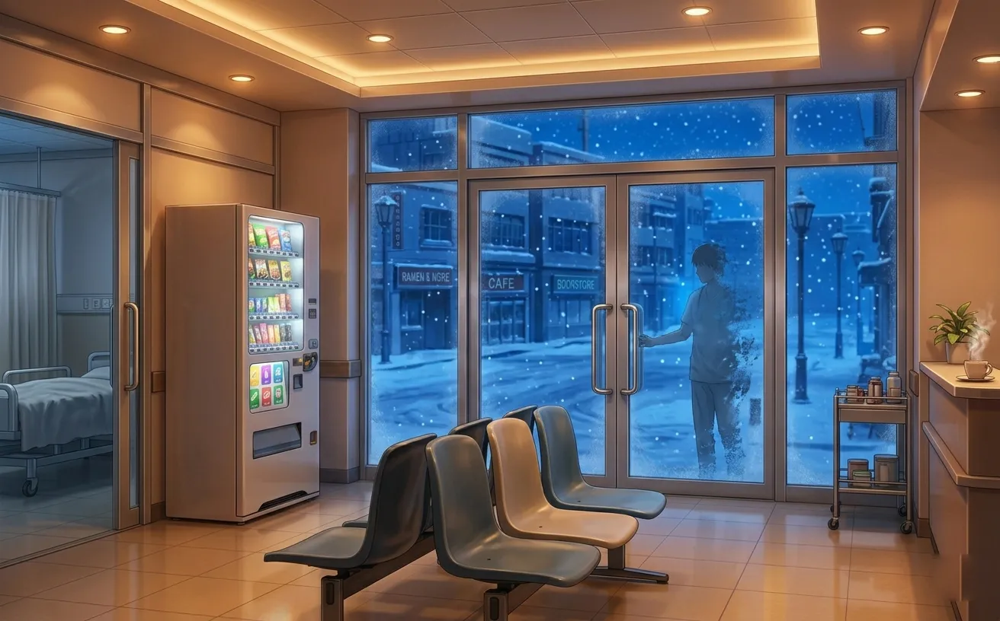
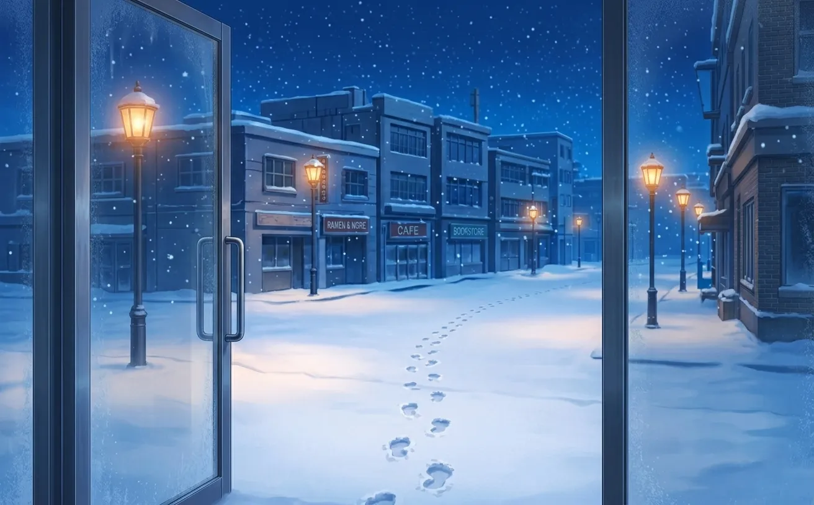

outside, snow. inside, a hospital waiting room. and her, sitting there for no reason at all.
the first snow came at 11:47.
zayne saw it through the hallway window. the kind of snow that falls straight down, no wind, no hurry. it coated the parking lot in minutes. the streetlights turned it gold.
he had been on shift since seven. twelve hours. two surgeries. three consultations. one patient who didn't make it.
his coffee was cold. it had been cold for hours. he didn't notice.
the waiting room was empty. it was always empty this late. the vending machine hummed. the clock ticked. the snow fell.

the doors opened at 12:15.
he looked up. she was standing there. coat dusted with snow. cheeks pink from cold. she wasn't injured. wasn't bleeding. wasn't in any obvious distress.
she just stood there. like she wasn't sure why she'd come.
"are you sick?" he asked.
"no."
"hurt?"
"no."
he waited. she didn't explain.
"then why are you here?"
she looked at the window. at the snow. at the empty chairs. "i was walking. it started snowing. i didn't want to be alone."
he should have told her to leave. the waiting room wasn't a shelter. visitors weren't allowed this late. there were rules.
he didn't say any of that.
"sit down. i'll get you some water."

he brought her water in a paper cup. she held it with both hands. didn't drink. just held it. like she needed something to hold.
"long shift?" she asked.
"yes."
"do you ever get used to it?"
"to what?"
"the hours. the quiet. the..." she gestured at the empty hallway. "all of this."
he thought about it. "no. you just learn to ignore it."
she nodded. like she understood. maybe she did.
they sat in silence.
the vending machine hummed. the clock ticked. the snow fell.
"why were you walking so late?" he asked.
"couldn't sleep."
"why?"
she shrugged. "just... couldn't."
he understood. he knew that feeling. the weight of a day that wouldn't end. the ceiling. the dark. the thoughts that circled and circled.
"i know what that's like," he said.
she looked at him. "you?"
"me."
"but you're a doctor. you save lives. you must sleep well."
he almost laughed. "saving lives doesn't help you sleep. sometimes it makes it worse."

she was quiet for a long time. then: "do you ever think about the ones you couldn't save?"
he didn't answer immediately. "every day."
"how do you live with it?"
"i don't know. i just... keep going."
she put her cup down. looked at him. really looked. "that sounds lonely."
he didn't have an answer for that.
the snow didn't stop.
they talked about nothing. the weather. the hospital. the vending machine coffee that was always too weak. she asked if he ever ate real food. he said protein bars counted. she said they didn't.
she told him about her day. about work. about the feeling of being busy but not productive. about coming home to an empty apartment and not knowing what to do with the silence.
"so you walked," he said.
"so i walked."
"and ended up here."
"and ended up here."
she smiled. small. tired. "i didn't plan it."
"does anyone ever plan to end up in a hospital?"
"probably not."

he looked at the clock. 1:47. two hours until his shift ended.
"you should go home," he said. "it's late."
"i know."
she didn't move.
he didn't ask her to.
at 2:30, she stood up.
"i should go."
he nodded. "be careful. the roads are slippery."
"i walked."
"then walk carefully."
she pulled her coat tighter. zipped it up. hesitated at the door.
"zayne."
"yes?"
"thank you."
"for what?"
"for letting me stay."
he wanted to say something. something real. something like "you can come back anytime" or "i don't mind the company" or "i'm always here this late."
he didn't.
"get home safe," he said.
she smiled. then she was gone.

he watched her walk across the parking lot. her footprints in the fresh snow. the streetlights catching the flakes in her hair.
she turned once. waved.
he raised his hand. barely. she probably didn't see.
then she was gone.
the rest of his shift passed slowly.
he checked on patients. wrote notes. drank more cold coffee. the usual.
but the night felt different. lighter. he didn't know why.
at 4:00, he stood by the window. the snow had stopped. the parking lot was white. her footprints were still there. fading, but visible.
he thought about texting her. "did you get home safe?"
he didn't. it was too late. or too early. or he was a coward.
maybe all three.

she texted him first. at 7:23.
"made it home. the snow is beautiful. you should look outside."
he was already looking.
he typed: "i see it."
then, after a pause: "thank you for coming."
she replied: "thank you for being there."
he put his phone down. looked at the snow. smiled. small. barely there.
it was the first time he'd smiled in weeks.